Creating Microsoft Azure Web Sites
Microsoft Azure supports several ways to create web sites. Of the available Microsoft Azure offerings, Cloud Services and Virtual Machines are the most flexible. While both of these approaches allow a great deal of control over your environment, they also require skill and time. A more streamlined experience is available with Microsoft Azure Web Sites. For web applications written by using ASP.NET, Node.js, PHP, or Python, Microsoft Azure Web Sites enables rapid deployment, easy configuration, monitoring, high scalability, and a service level agreement (SLA). This paper provides guidance on using Microsoft Azure Web Sites. Creating a web site from the gallery You can easily create a new Microsoft Azure web site by selecting a starter project from the gallery in the Microsoft Azure Management Portal. These options provide solutions to get you closer to your goal with less work than if you started with a blank project. The gallery contains Microsoft-provided options, such as ASP.NET-related starter projects, as well as options for Python, PHP, and Node.js that are based on community projects or from other third parties. This paper assumes that you already have a Microsoft Azure subscription. (If you do not have an account, sign up for a free one-month trial of Microsoft Azure.) After logging into your account on the Management Portal, you will see a window similar to the image in Figure 1.
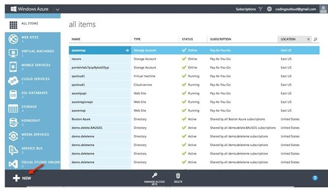1. Select + New to open a wizard from which you can create many types of cloud resources.
Creating Microsoft Azure Web Sites
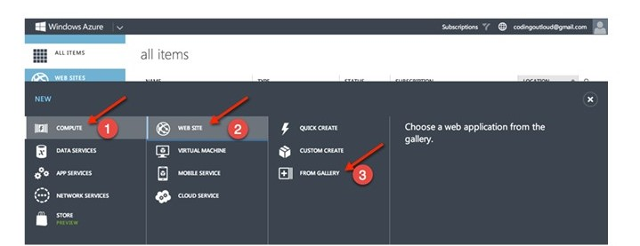2. Select COMPUTE > WEB SITE > FROM GALLERY. From the gallery, you can select from a variety of starter projects for a range of technologies, including Node.js, Python, PHP, and ASP.NET, as shown in Figure 3.
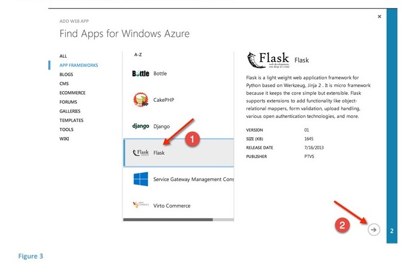Creating Microsoft Azure Web Sites
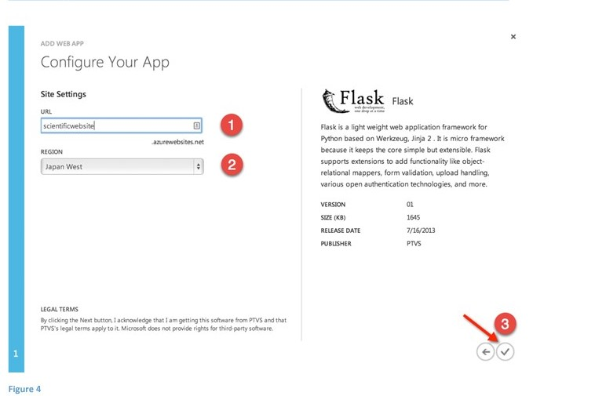
4. Provide a subdomain name: scientificwebsite (1).
5. Select a region, Japan West (2).
6. Click the checkmark button (3).
This creates our new web site, as shown in Figure 5
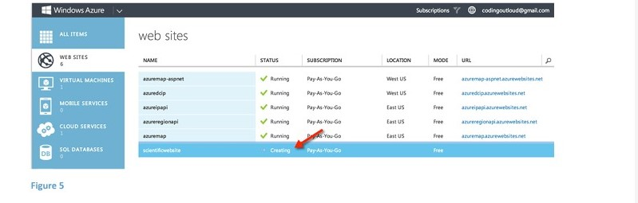
Creating Microsoft Azure Web Sites
Since the subdomain we chose for our web site is “scientificwebsite,” the web site will be created at http://scientificwebsite.azurewebsites.net, or at the equivalent HTTPS URL by using the built-in wildcard SSL support. 7. Click the name of the web site, scientificwebsite, to get to the next screen.
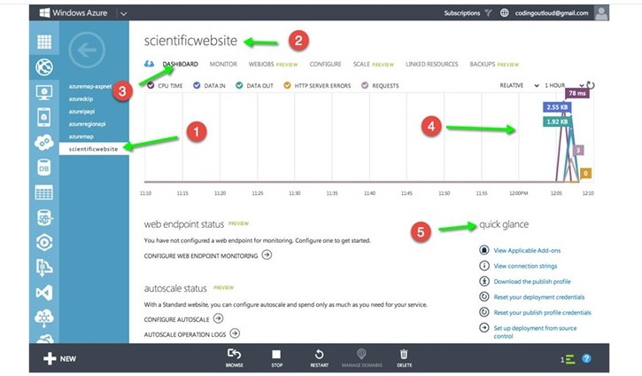In this screen (Figure 6), you can that see we have selected our web site (1); our web site name displays at the top (2). Relating specifically to our web site, we are on the DASHBOARD tab (3), which has a lot of useful information, including a summary of the monitoring data (4), and the ability to view and make changes to various credentials for FTP, management through the API, and more (5). In addition to the DASHBOARD tab, there are other tabs where you can configure specialized settings. For example, from the SCALE tab, you can manage manual scaling and configure auto-scaling rules, and the CONFIGURE tab provides options for logging parameters, configuring a custom domain name, and more.
Creating Microsoft Azure Web Sites
Initial creation of Python web sites and using third-party tools The simplest way to start configuring a Python web site is to select an option from the gallery. This ensures that proper site configuration is in place and that the Python libraries (for example, Django) are deployed for the web site. Once deployed, you can use FTP to capture the source code from the site and copy it locally. Once the source is local, you can edit with any tool (such as Vim, PyCharm, or Microsoft Visual Studio). Alternatively, if you would like to start a project from within another tool, you can set up Python configuration settings yourself. In addition to configuration settings, deployments must include all non-standard Python libraries needed by your web site, such as all the libraries you downloaded by using pip or a similar package manager. For instructions on setting up Python configuration settings and deploying additional Python libraries, see the tutorial, Creating Web Sites with Django. Automatic publishing to web sites Web Sites supports integration with a number of source code repositories, such as Bitbucket, GitHub, and VisualStudio.com, and even other services, such as Dropbox. You can configure any of these so that changes to source code deploy automatically to one or more web sites. In this section, you will learn how to configure a web site to support continuous deployment from a GitHub repository. Continuous deployment means that if there is a change, the web site updates automatically. If someone uses the commands git commit and then git push to record changes to the repository, GitHub executes a WebHook. A WebHook allows a repository to communicate with a web server whenever the repository receives a push. In this example, the WebHook communicates with the Microsoft Azure web site, which performs a git pull and redeploys the code. For more information about WebHooks, see Creating Webhooks on GitHub Help. Aside from the advantage of keeping your web site updated, there are additional benefits associated with continuous deployment. For example, if you don't want to give people access to your web server, you can give them access to the GitHub repository instead and they can check in their changes there. If you want to review changes before they appear on the web site, you can use the git pull feature (commonly known as a “pull request”). The next section is a procedure for creating the web site by using existing code. It assumes that you already have a GitHub account with a repository (in addition to your Microsoft Azure subscription). Your repository should contain some code that can appear on your web site, such as a "Hello, word" example. If you would like, you can also clone the flasky GitHub repository that is in this example.
Creating Microsoft Azure Web Sites Creating a web site from source control
Follow these steps to create a custom Flask web site that deploys code from your GitHub repository and supports continuous deployment. 1. Go to the Microsoft Azure Management Portal and select WEB SITES in the menu on the left, as shown in Figure 7.
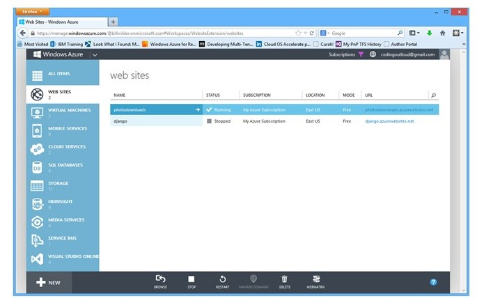2. Select + New at the lower left of the screen.
Creating Microsoft Azure Web Sites
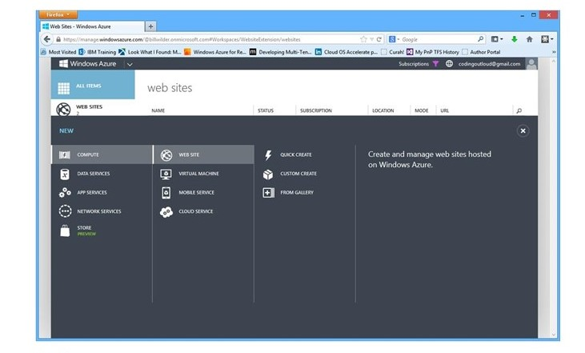
3. In the next screen (Figure 8), select COMPUTE > WEB SITE > CUSTOM CREATE. The Create Web Site dialog box appears (Figure 9)
Creating Microsoft Azure Web Sites
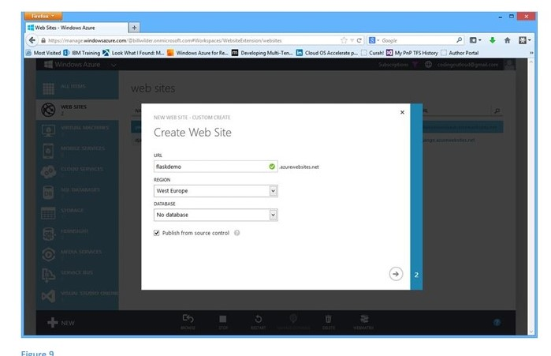4. In the URL field, enter a unique name for the web site. Microsoft Azure automatically checks to see if the URL is acceptable. If it is, a green checkmark appears next to the name, as shown in Figure 9. The URL of the web site will be name.azurewebsites.net. In this example, it will be flaskdemo.azurewebsites.net. 5. From the REGION drop-down box, select the region that will host the web site. 6. Make sure that the DATABASE field is set to No database. Select the Publish from source code checkbox to enable integration with a source control system. 7. Click the right arrow () at the bottom right of the dialog box. The second page of the dialog box appears (Figure 10). This is where you select your source repository.
Creating Microsoft Azure Web Sites
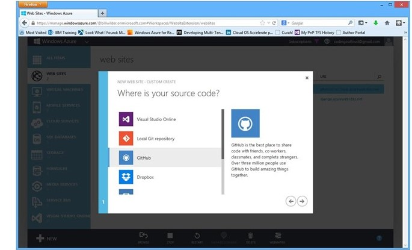8. Select GitHub. 9. Click the right arrow () at the bottom right of the dialog box. 10. If you are not already signed in to GitHub, a GitHub sign-in page appears. Enter your GitHub user name and password. Click Sign in. If the authorization is successful, the Choose a repository to deploy dialog box appears (Figure 11).
Creating Microsoft Azure Web Sites
11. Select a repository from the REPOSITORY NAME drop-down box. 12. Enter a branch in the BRANCH TO DEPLOY field. 13. Click the checkmark button. Microsoft Azure Web Services will create your web site. 14. Go to the Microsoft Azure Management Portal to see the status of your web site (Figure 12)
Creating Microsoft Azure Web Sites
In Figure 12, you can see that the status of flaskdemo is Running. 15. Go to your web site. In this example, the address is http://flaskdemo.azurewebsites.net/. You can see that the web site is already populated with the code from the flasky repository on GitHub. Any updates to the code in the repository will deploy automatically to the web site. Viewing WebHook settings If you are interested in seeing what the integration with the web site looks like from within GitHub, go to https://github.com/username/reponame/settings/hooks (insert your GitHub user name [username] and the repository name [reponame] in the URL where indicated).
Creating Microsoft Azure Web Sites
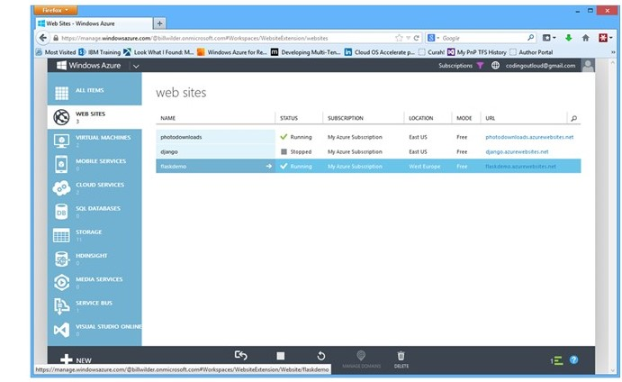You will see that a new WebHook URL has been added (displayed in the second URL field in Figure 13), which is attached to the flaskdemo web site. Managing and scaling web sites The Microsoft Azure Web Sites service offers plans that target various common workloads. For lowvolume web sites, there is a free plan that includes a modest amount of traffic and some space in either MySQL or Microsoft Azure SQL Database. For higher-traffic and more complex web applications, there are paid options that support custom domain names, auto-scaling, and the ability to scale between 1 and 40 CPU cores. For more information about pricing, see Microsoft Azure pricing at-a-glance. Full management of web sites is available through the Microsoft Azure Management Portal, but there are also management APIs to enable integration with other tools. The APIs can be accessed natively through REST-style integration, but there are also platform-specific SDKs written for Node.js, Python, .NET (for C#, F#, or any other .NET Framework programming language), Java, popular mobile platforms, and others (see the full list). Microsoft also exposes management features through a suite of PowerShell cmdlets and a set of Cross-Platform Command Line Interface (xplat-cli) commands, both of which allow for easy scripting; the xplat-cli runs on Linux, Mac, and Windows, while PowerShell runs only on Windows. Visual Studio and third-party tools can also integrate by using the APIs. You can also create custom integrations as needed. 12 Creating Microsoft Azure Web Sites Simplicity is a feature Powerful features are helpful only for sites that need them—now or in the future. However, if you run a small lab, you probably don’t need custom integration or Internet-scale features; you may not even have the resources to maintain your own web site. With Microsoft Azure, once your web site is running, you can forget about it. If the web site fails or crashes, it restarts automatically—no manual intervention required. You have a simple view, including monitoring and management, directly from the Microsoft Azure Management Portal. Learn more Microsoft Azure Web Sites (http://azure.microsoft.com/en-us/documentation/services/websites/) Microsoft Azure pricing at-a-glance (http://azure.microsoft.com/en-us/pricing/overview/) Flask (http://flask.pocoo.org/) GitHub Help (https://help.github.com/) GitHub Webhooks (https://help.github.com/articles/post-receive-hooks) © 2014 Microsoft Corporation. All rights reserved. Except where otherwise noted, content on this site is licensed under a Creative Commons Attribution-NonCommercial 3.0 License.